Dress Up reports
Reports on Messed Up Dress Up, the game made with M and N, now a hybrid: JavaScript, with Hazel as the scripting language for its game logic (by default; Fumola beside it for comparison), where features are tried with real players before they are rebuilt as livelits in Hazel. Each report takes one question and answers it with measurements. The first rule they measure: 60 frames a second for everything a game controller does. (Hazel's own series is the Hazel reports.)
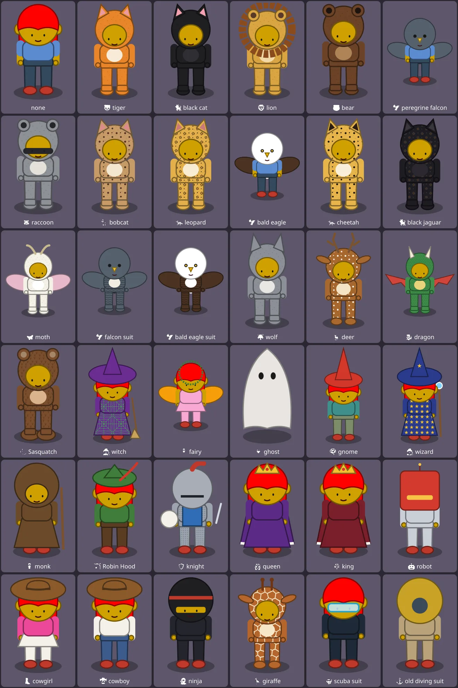
^du_report(21) · 2026-10-26 · work in progressDungeons, From Above
A day of design work after A Link to the Past: a dungeon room seen from above, four kinds of way between its rooms (a wall, a doorway, a doorway that scrolls, no wall), holes and ledges; and the friend drawn from above and asleep in the tent, in all 36 costumes, each costume and view on sheets to look at. From ^ticket(621) to ^ticket(627).
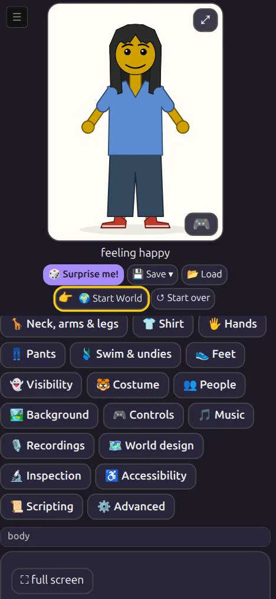
^du_report(20) · 2026-10-25 · work in progressA way in
A new player on a phone: how do they find the game's world, and know what to do in it? Why a friend got lost, and the first step: 🌍 Start World, a pointing hand on it, and a welcome saying what the game is for now.
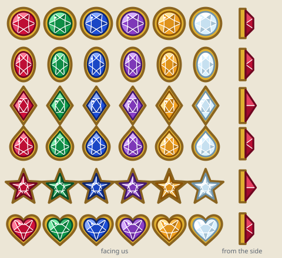
^du_report(19) · 2026-10-24Ready to Re-mix
After so many new costumes, are the drawing routines ready to be re-mixed: the ninja's gems in the king's crown, in treasure chests, on swords, shields and thrones, and fourteen more scenarios? Five are ready, eight need a small change, four a re-organisation. Three re-organisations are done, the ninja's gem now any drawing's gem among them, each proved by drawing the friend 12,570 ways, identical byte for byte, in node on the laptop, on today's code (0.0.428). From ^ticket(564).
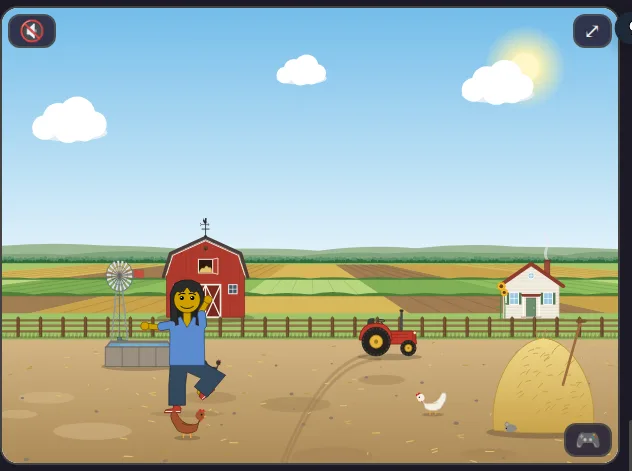
^du_report(18) · 2026-10-24 · work in progressStory scripts: a director's guide
For M and N: the 🎬 story box, where you write what your friend does, a step a line, and the 🚶 paths the other people walk; examples, stories to try, a quick card, and a zine with eight coloring pages. Work in progress until M and N have read it. From ^ticket(600).
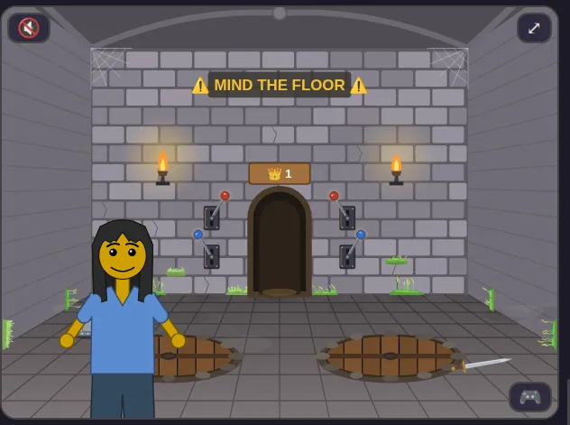
^du_report(17) · 2026-10-24Game scripts: a player's guide
The 📜 Scripting panel, written up as a 1980s-90s game manual: the three languages, the panel, the pit room's rule, the 🪵 event log and debugging with it, four broken scripts and how to fix them, which game events and how much of the game's state reach a script, and the full feature list. From ^ticket(593).
^du_report(16) · 2026-10-21The space between the boxes
Every panel is boxed now: how much of each is empty, at the screens and zoom levels the game is played on, where does that space come from, and how much can the layout give back? Full screen is where the space is; the side panel is less empty than at 0.0.204, and less again after; and four bugs found on the way. The follow-up to ^du_report(5), from ^ticket(521).
^du_report(15) · 2026-10-21Seen before it was built
What did the two mock-ups for a dragon, its fire and armour for the knight's horse show Matthew before anything was built, and what went out? Both pages are here to play with. They were ready 10 and 31 minutes after he asked; he left the pick to M and N, so the costume, all six fires and all six sets went out in 0.0.392, 81 minutes after the ask. The game's fires and their heat are the mock-up's own, drawn again from every side; fire from things in a scene and armour on a stand are not built yet.
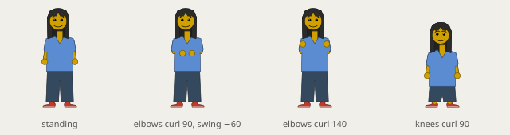
^du_report(14) · 2026-10-19Posing the body
How is the friend's body posed, what does a new pose need from the drawing, and which poses come next? Three views and transforms of them; a new angle is a drawing routine of its own; and elbows and knees now turn in three dimensions, from lying along the tent's sleeping bags (ticket 412) and the joints (ticket 414).
^du_report(13) · 2026-10-19Dress Up's hardest parts for Hazel
Which parts of Dress Up's drawing would be hardest for Hazel, can Hazel do music, and how could the game's menus work in Hazel? The hard part of the drawing is not its SVG but what runs every frame around it; Hazel can compute the music today, though playing it takes a JS player or a new builtin; and the menus meet about two of the nine knolling rules, the gap being a layout Hazel lacks, then speed.
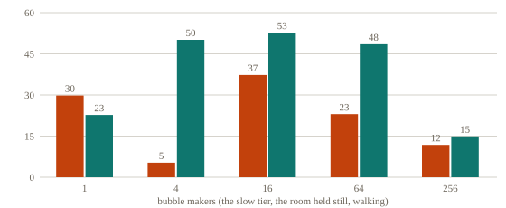
^du_report(12) · 2026-10-18The foam, not the makers
Why was the bubble room slow with one bubble maker, and how far can a kid go pressing "+ bubble maker"? In Firefox the room's own moving foam was the cost (18 frames a second; held still, 52; empty, 60), not the maker: still at the start since 0.0.306, his case now 60. Many makers share one budget and float in a picture of their own since 0.0.307: 16 makers on the slow tier walk at 53 instead of 37. And why each maker costs 4 times the drawing it did in 0.0.239.
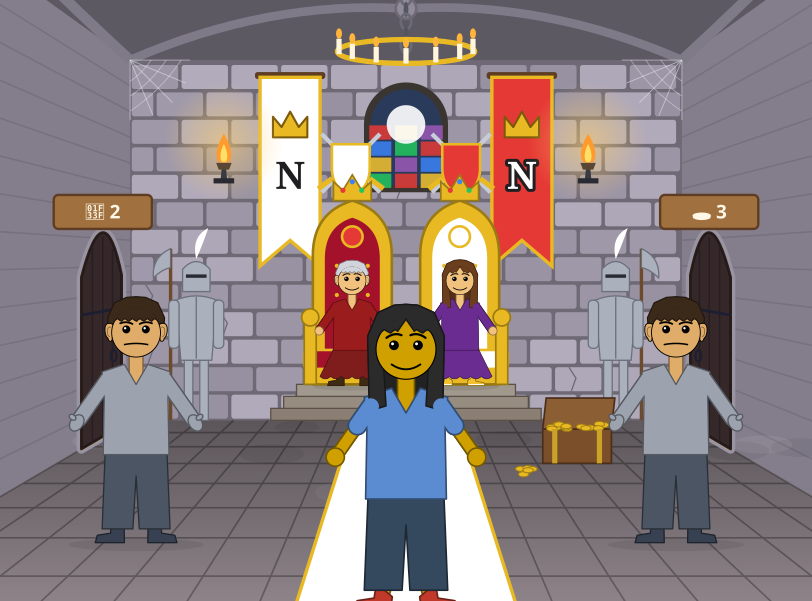
^du_report(11) · 2026-10-18A cast of friends
Could the friend's own design system make an adventure game's whole cast, like Hugo's, Quest for Glory's, King's Quest's or Monkey Island's? Most of it today: 27 people by place, made in the game with its settings alone, and the same few pieces missing again and again (something held, a hat or a crown, a beard). The king's room and the beach with people in them; what a person as a place's thing needs, and its cost on the black laptop; how costumes are made, and how the next could be cheaper.
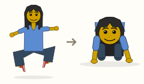
^du_report(10) · 2026-10-18Pose by pose
How is the friend drawn in each pose, and how was it drawn before? One skeleton set by angles, moved by moments of a stride, turned by facing: fifteen poses drawn by seven versions from 0.0.30, which could only stand toward us. Crawling changed most, toward us and away, from a floating crouch to hands on the floor; and the picture archive had drawn sitting, cross-legged and dancing as standing at every run.
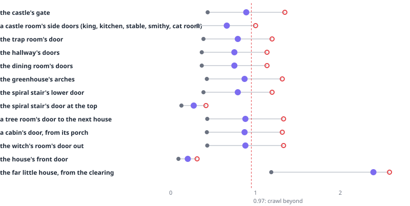
^du_report(9) · 2026-10-18One size, every view
Is the friend the same size inside a place and out, against its doors, when the player shapes the friend? Not on the tree's porches and bridges, which set everyone to one height: fixed in 0.0.302, with every door sized to the default friend (0.68 to 0.91 of each) and one rule for crawling, so a child and the default walk and an adult crawls, inside and out. Left to decide: the house's giant front door.
^du_report(8) · 2026-10-18Piece by piece
How could the whole game move to Hazel, in two months or three? What it draws (56% of its 22,407 lines: the friend, the poses, the places) ports piece by piece, each checked against the picture archive's own SVG; in three months the rules too. The frame loop, the controllers and the sound wait on Hazel, not on time.
^du_report(7) · 2026-10-18Stories and stress
Does M extend the game for social stories, and N for stress tests? Read against all 34 of their requests: N's mostly, 8 of 13, by load (cauldrons until the laptop froze, a room of bubbles) or by rules at their edges (pits, boulders, being hit); M's 9 of 22 make room for a story or something her own (a dining room, a hut village, her letter), and 6 more mend the tools.
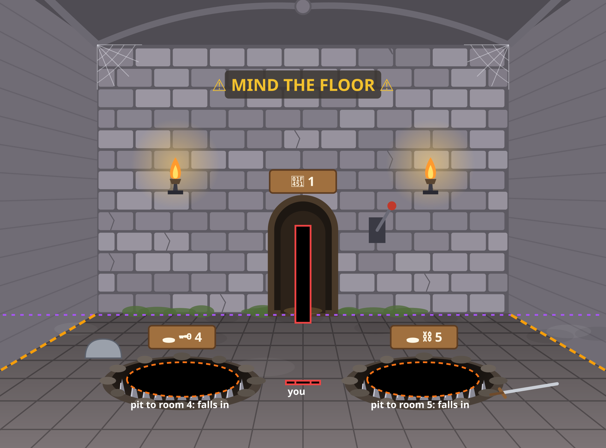
^du_report(6) · 2026-10-18Then and now
Messed Up Dress Up beside the adventure-game engines of 1984 to 1993: Sierra's AGI and SCI, LucasArts' SCUMM, the Hugo games. The same layers behind a picture (priority, control; our depths and collision boxes); of their eleven hard problems we meet nine again, faster; what is new now; Hugo's House of Horrors, and what it would take to be a game like it.
^du_report(5) · 2026-10-18Always be knolling
What did the two full-screen designers (🎵 Music, 🗺️ World design) do alike that the other 17 tabs do not? Thirteen choices, from a slim bar to boxes within boxes and the game as the first card. 🏞️ Background alone declares 1,337 rows; a player sees 9 to 50 in one place. A proposal for every panel, nine rules, with before and afters for the castle's themes, the bubble themes and a full-screen background designer.

^du_report(4) · 2026-10-18One folder, every run
How can the picture archive keep a year of runs in one repository? No PNGs (a run's were 185 to 397 MB), one folder rewritten by every run and every run a git tag: the same five runs in 24 MiB, against 768. And what moving it showed: the settings file did not decide its drawing (a saved time, the page's clocks, random choices), and 0.0.198's hidden drawings left out look the same, the waterfall 183 to 116 KB.
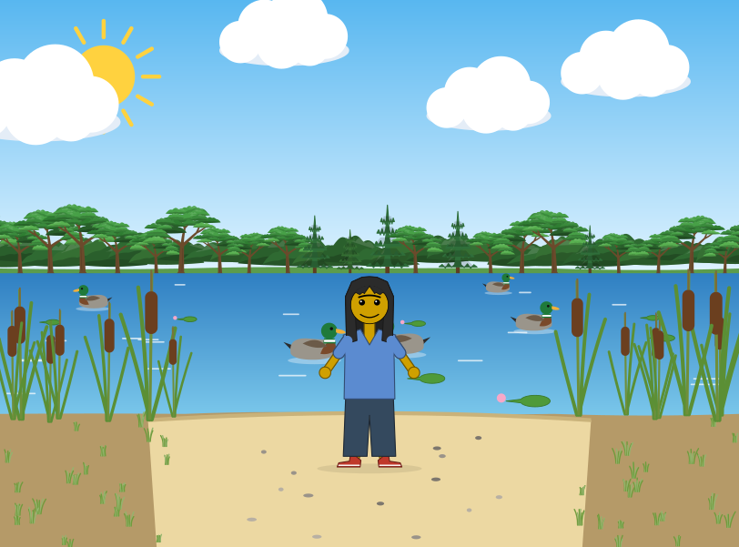
^du_report(3) · 2026-10-16Slow until reloaded
Why did the game stay slow after the duck pond, everywhere, until a reload? The 🏞️ Background tab: with it open the pond swam at 2.4 to 14.9 frames a second, its controls working out the whole castle on every refresh (790 ms); fixed on a branch, 59.3. And what a session keeps: a bounded cache, not a leak. The series' first measurements on GitHub's computers.
^du_report(2) · 2026-10-16The kids' computers
Why was the game choppy on an Ubuntu laptop (Intel i7) and an iPad, and pausing on Matthew's laptop? Two causes (Firefox's animations, Safari's shapes) answered by still bitmaps: the duck pond 27 → 58 and 22 → 60; and a stale "choppy" mark on Matthew's laptop. Measured on each computer, pasted into a public pad.
^du_report(1) · 2026-10-1660 frames a second, and what checks it
Does the game hold 60 frames a second for what a controller does? Every measured case does on 0.0.78 (59.3 to 60); the measuring covers 2 of 8 kinds of action in 7 of 24 places, and none of it runs in CI yet.